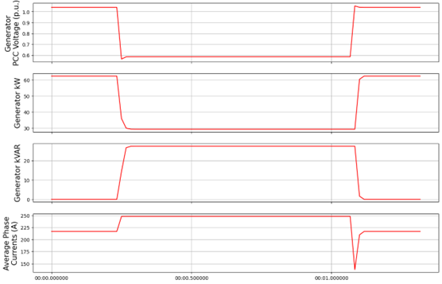
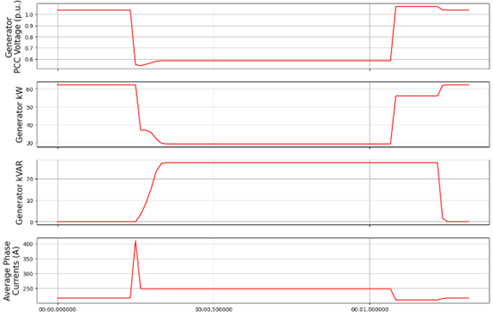
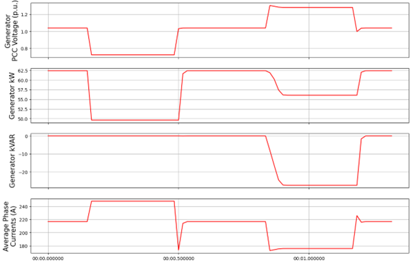

Dynamic Voltage Support Controller#
(DynamicVoltageSupport.py)
The DynamicVoltageSupport (DVS) controller will control the DER to provide “rapid reactive power exchanges during voltage excursions” per 1547-2018 clause 6.4.2.6. The addition of DVS for DER objects may improve system stability during faults and/or improve ride-through capabilities for DERs.
The DynamicVoltageSupport controller works with OpenDSS Generator objects and can be applied to one or more generators. Generator objects must be 3ph and must have the following parameters defined: kV, kVA, kW, kVAr. The opendss generator model defined in the opendss file does not matter when using this controller as it will be overwritten by the controller upon initialization. The controller is designed to mimic the current-limited behavior of OpenDSS generator model 7. For comparison purposes, one can run a baseline simulation without this controller using generator model 7. The response of this controller is designed for 3ph voltage sags or swells and assumes a balanced response from the generator objects.
DVS can be used alone or can be coupled with the PvVoltageRideThru controller (see notes below on required parameters). NOTE: An issue exists when generators re-enter service after a trip, which will be resolved in future revisions. One can set the reconnect time to a value longer than the simulation to ensure generators do not re-enter service after a trip. This only works when not using momentary cessation (i.e. with Category III Voltage Ride Through)
Controller Assignment#
The controller may be assigned to DERs via the pydss registry.
Controller Settings .toml File#
The following is an example of the required Settings.toml file for implementing DVS control. Each of these fields must be defined and linked in the controller registry.
Example Results (created using controller version 2.0)#
Undervoltage Event Baseline DVS Settings#
Baseline Results#
The results below show a single, 187 kVA DER’s DVS response to a simplified voltage sag lasting less than 1 sec with a minimum, sustained PCC voltage of about 0.6 p.u, and a simulation timestep of 1 cycle (0.0167 sec). We see an immediate increase in reactive power contributions in response to the voltage sag. Due to the DER enforcing its current limit and acting in VAR priority, we also see a coincident reduction in active power. The current limit (Iqh1) in this scenario is set to 1.1 p.u., leading to an increase in phase current of about 10%. The current limit is evaluated at the nominal voltage for the generator (0.48 kV) and is enforced in the simulation without any intentional delays. This instantaneous enforcement of the current limit is a reasonable approximation as inverters, whose solid-state switches are very sensitive to thermal overload, are generally capable of limiting current within a fraction of a cycle. The current increases during this simulated fault are also completely balanced, as inverters generally keep negative-sequence fault contributions to a minimum (following a very short, 1-2 cycle, transient period). The VAR contributions are limited by the kvar_max parameter at 0.44 p.u or about 27 kVAR/phase. Overall, the response time here is very fast, given the baseline time constants for the voltage transducer and inverter controller of about 1 millisecond.

Varying Trv: Trv=0.1#
In this scenario, we increase the time constant for our voltage transducer, essentially increasing the lag between when the system voltage drops and when the inverter registers this drop. As such, we see a largely similar response to our baseline, except with a short delay initially, and when the voltage returns to normal. As a result of this delay, we also see a large spike in current for a single timestep, given that the inverter does not limit current at the lower voltage, until it registers the lower PCC voltage. We can also more clearely see the impact on PCC voltage resulting from the inverter response, with a rise in PCC voltage of about 0.08 p.u. (compared to the lowest point of the initial sag) following the rapid reactive power injection.

Varying T_inv: Tinv=0.1#
In this scenario, we return Trv to 0.001 s and instead increase the inverter controller time constant (Tinv) to 0.1. While the DER registers the voltage drop almost immediately, the inverter response is much slower. Increasing Tinv, reduces the response time of the inverter following a control input. Here we see an initial, rapid decrease in real power as a result of the inverter immediately enforcing its current limit. As reactive power contributions slowly climb, active power reduces further. Still, we enforce a current limit of 1.1 p.u. and a kVAR limit of 0.44 p.u.. Once the voltage returns to normal, we current drop below its pre-fault levels and slowly increase back to normal (if the simulation ran longer) as we reduce our kVAR contributions and proportionally increase our kW contributions.

Varying Kqv: Kqv=10#
In this scenario, we return both time constants (Trv and Tinv) to 0.001 s and instead reduce our gain constant from 100 to 10. This effectively slows down the rate at which kVAR contributions are increased (as provided to the inverter controller as an input signal). The inverter controller still reacts very quickly to the input signals, however the lower gain constant results in a slower, linear increase in kVAR contributions. This does not affect the speed that the inverter returns to pre-fault conditions after the fault.

Varying 1qh1: Iqh1=2.0#
Returning all other settings to the baseline, in this scenario we increase our current limit from 1.1 p.u. to 2.0 p.u. In the first set of plots below, we see a larger increase in current (~ 150 A increase vs. 30 A in our baseline). One will notice that this increase is not quite double the pre-fault current. While we don’t actually reach our user-defined current limit in this scenario, we instead hit our kVA limit of 1.0 p.u. and our kVAR limit of 0.44 p.u.. Our generator’s kva parameter in the .dss file is set to the same value as its kw parameter (187 kVA). If you do the math during the fault (3*sqrt((27 kVAR**2)+(56 kW**2)), we get 187 kVA. At this PCC fault voltage of ~0.6 p.u., we will not see a further increase in DER contributions. If one were to rerun this scenario with a lower fault voltage, simulating a closer-in fault, one would see the same kVA contributions but with a larger current increase, closer to the 2.0 p.u. current limit. This is shown in the second plot below.

Varying kvar_max: Kvar_max=1#
Returning to the 0.6 p.u. fault voltage and baseline settings, here we increase kvar_max from 0.44 to 1.0 p.u. This represents a theoretical inverter, which can curtail 100% of real power to supply only reactive power. In the first set of results below, we see that kW drops to zero, as kVAR increases until the DER’s current limit of 1.1 is reached. In the second set of results below we use a current limit (iqh1) of 2.0 and a kVAR limit (kvar_max) of 1.0 p.u. resulting in the DER supplying a kVAR value equal to the prefault kW value.
UnderVoltage Overvoltage Event Baseline Settings#
Baseline Results#
In the following scenarios we apply both and undervoltage (UV) and an overvoltage (OV) in quick succession, to demonstrate the ability of the DER to provide both capacitive and inductive support. Notice we also set the post_fault_reset period to 0 s, such that the inverter can provide dynamic voltage support for a second voltage event immediately following the first fault, with no intentional delay. Normally, setting a non-zero post_fault_reset, prevents oscillatory behavior when system voltages are very near the edge of the voltage deadband (dbd1 and dbd2). The results in our baseline simulation show that kVAR contributions increase during the UV event and decrease (absorbing) in the OV event. The UV event looks largely like the previous scenarios discussed above. During the OV event, we see a reduction in current contributions vs. pre-fault levels, indicating we are not current limited during the OV, but instead we are kVA-limited (set by the overvoltage_kva_limited Boolean parameter). We also see a reduction in active power for the sake of absorbing reactive power while maintaining a total kVA contribution of 187 kVA (3*sqrt((56 kW**2)+((-28)**2))).
Varying Capacitive Support: capacitive_support=False#
By setting capacitive_support to False, we prevent the DER from providing capacitive support during an UV event. Instead the DER will simply operate in a current-limited manner, supplying only active power. This UV behavior is akin to using generator model 7 in OpenDSS. OV inductive support is unaffected by this parameter.

Varying Inductive Support: inductive_support=False#
Setting inductive_support to False, prevents the DER from providing inductive support during and OV event. UV capacitive support is unaffected by this parameter.

Combining DVS and VRT for a FIDVR Event#
This PyDSS DVS controller can be used alone, or in conjunction with the PyDSS voltage ride-through (VRT) controller. Combining the two can be accomplished using the “Use with Voltage Ride Through” and “Use with Dynamic Voltage Support” parameters in the DVS settings .toml file and the VRT settings .tomly file, respectively. Below are results simulating 4 scenarios using 28 generators all with the same settings and controllers assigned. The simulated event is a fault induced voltage recovery (FIDVR) applied as a voltage profile at the slack bus. The four scenarios are as follows:
(no controllers assigned). This provides a baseline amount of generation to compare other scenarios to. | 2. NO_VRT: Generators are not utilizing DVS, and are instructed to trip instantaneously below 0.88 p.u. voltage. | 3. NO_VRT_DVS: Generators are utilizing DVS, and are instructed to trip instantaneously below 0.88 p.u. voltage. | 4. NO_VRT_DVS_INACTIVE: Generators are assigned the DVS controller but with both capacitive support and inductive support disabled, and are instructed to trip instantaneously below 0.88 p.u. voltage. This is meant to show that there is alignment between the DVS-controller-initiated generator behavior, and OpenDSS’s generator model 7.
The results show that 28/28 DERs trip offline in every scenario, due to the absence of any VRT capability. We see a reduction in average PCC voltages compared with baseline due to the loss of distributed generation.
In our second set of FIDVR results, we use IEEE 1547-2018 Category I VRT settings, coupled with the same DVS settings described in the scenarios above. Here we see that, with DVS activated (VRT_CAT_I_DVS), the generators all provide reactive power support, raising the average PCC voltage compared to the VRT_CAT_I_DVS_INACTIVE scenario. We also see that only 23/28 generators trip offline, due to the addition of DVS and the PCC voltage improvements that result from it.